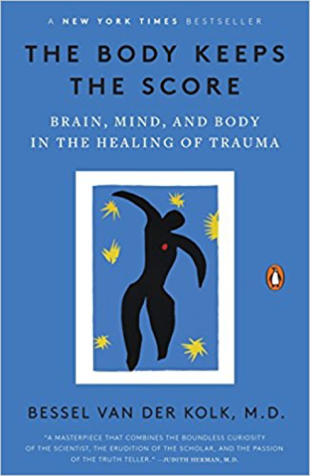
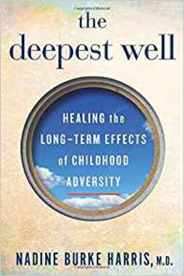
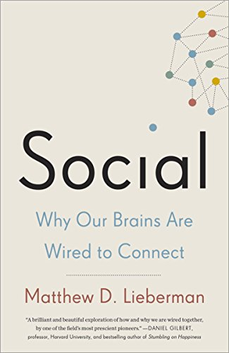
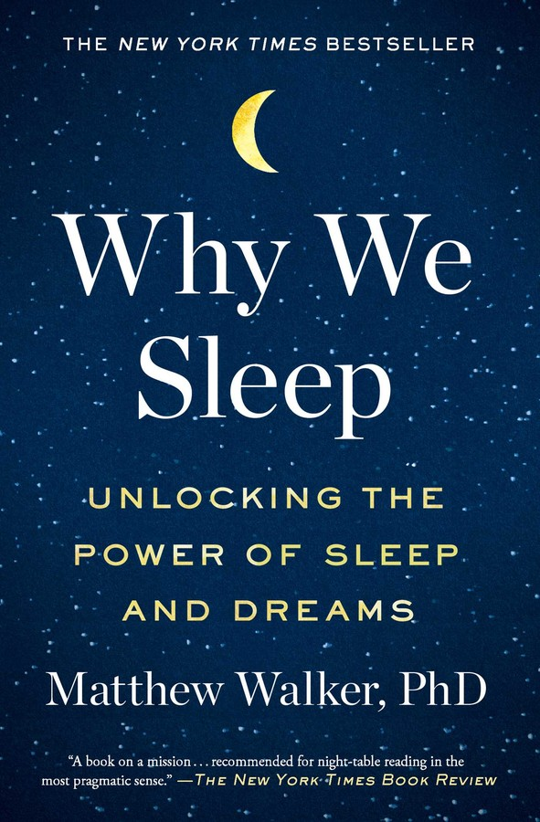
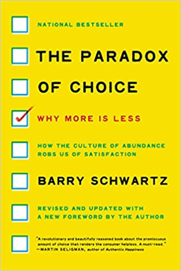
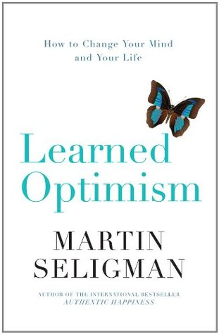
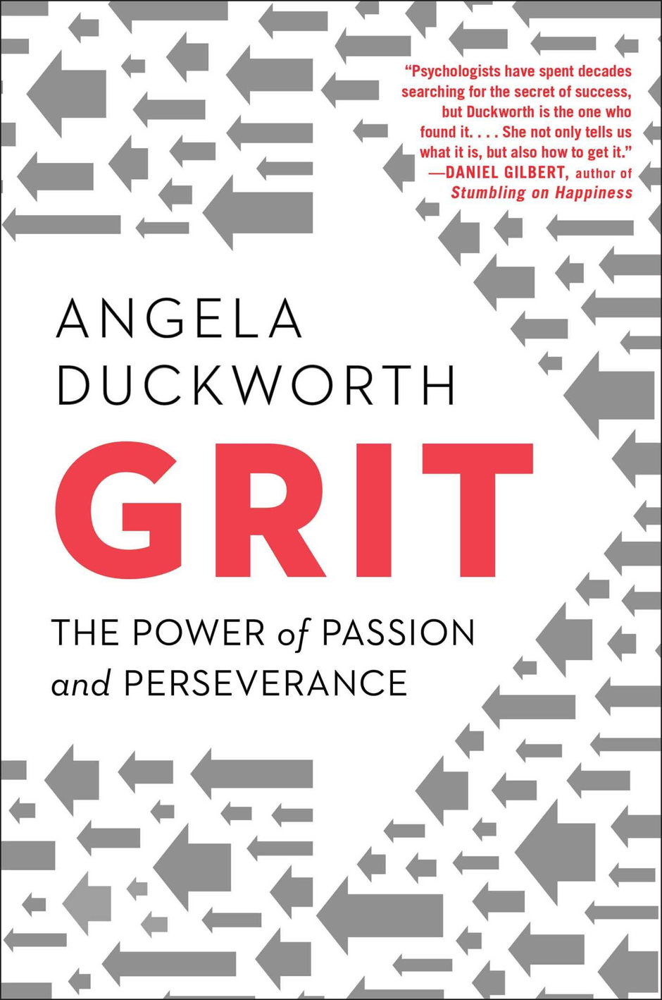

Dr Burke-Harris gives a brief overview of the Adverse Childhood Experiences Study. She discusses the link between untreated childhood trauma and early mortality.
Bessel van der Kolk
A 100 minute summary of his must read book, The Body Keeps the Score: Brain, Mind, and Body in the Healing of Trauma
Leslie Morgan Steiner
Why do people stay in abusive relationships
Ken Clearwater - Male survivor of sexual abuse
The Power of Vulnerability - Brene Brown
Grit - Angela Lee-Duckworth
Richard Lerner - What helps young people to succeed in life
Famous Failures
Scientists are now starting to ask the question what can make people happy.
The new era of positive psychology | Martin Seligman
Books and Further Reading
Daring Greatly:
How the Courage to Be Vulnerable
Transforms the Way We Live, Love, Parent, and Lead
by Brene Brown
The Body Keeps the Score:
Brain, Mind, and Body in the Healing of Trauma

by Bessel van der Kolk M.D.
The Deepest Well:
Healing the Long-Term Effects of Childhood Adversity

by Nadine Burke Harris M.D.
Social:
Why Our Brains Are Wired to Connect

by Matthew D. Lieberman PhD
Why We Sleep:
Unlocking the Power of Sleep and Dreams

by Matthew Walker PhD
The Paradox of Choice:
Why More Is Less

by Barry Schwartz
Learned Optimism:
How to Change Your Mind and Your Life

by Martin E. P. Seligman PhD
GRIT:
The Power of Passion and Perseverance

by Angela Duckworth
Flourish:
A Visionary New Understanding of Happiness and Well-being